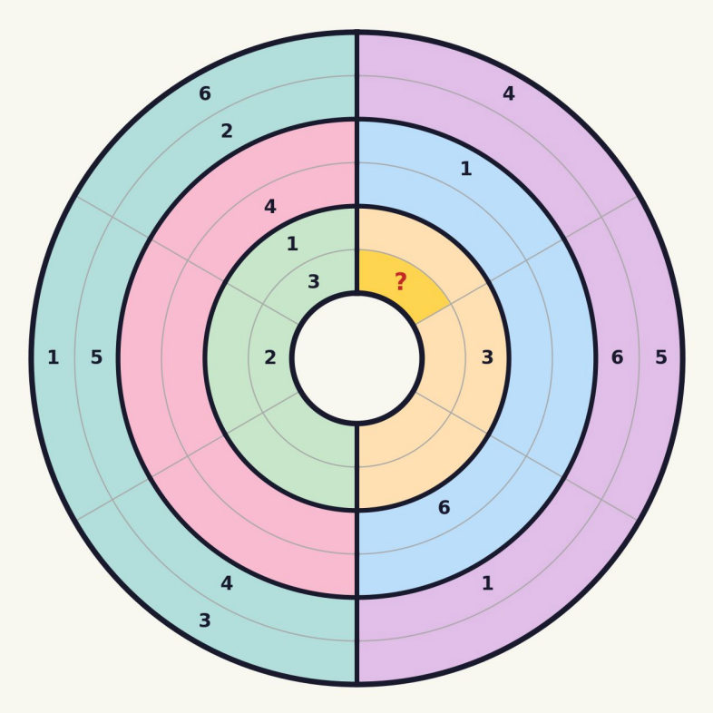
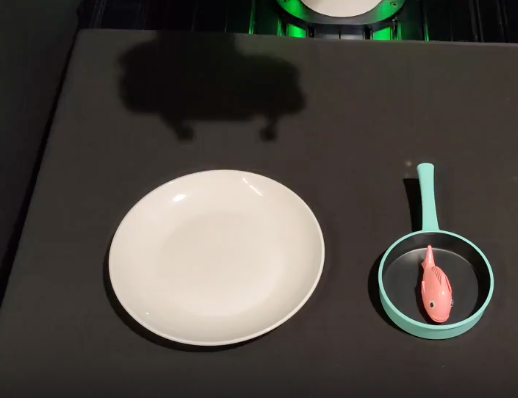

|
Zhicheng Wang I am currently a staff research engineer in Google DeepMind. I am a core contributor of Gemini on vision area, working on Pretraining, SFT and RL. Recently I am focus on video spatial in pre-training and agentic vision tool use in post training. Before LLM/VLM, I mainly worked on 3D computer vision. I graduated from Tsinghua University and UCSD. I had several AI/AR startup experiences. |
{kind=link}
Research & Projects |
|
 |
The Cartesian Shortcut: Re-evaluate Vision Reasoning in Polar Coordinate
Space
Xia Hu, Zhenrui Yue, Brian Potetz, Howard Zhou, Leonidas Guibas, Chun-Ta Lu, Zhicheng Wang arXiv, 2026 arXiv introduce Polaris-Bench, a benchmark that dismantles models' reliance on grid-based textual shortcuts by shifting 53 visual reasoning tasks from Cartesian to Polar coordinates, revealing a dramatic performance collapse from up to 83% down to 39% despite identical logical constraints. |


|
Image Generators are Generalist Vision Learners
Valentin Gabeur, Shangbang Long, Songyou Peng, Paul Voigtlaender, Shuyang Sun, Yanan Bao, Karen Truong, Zhicheng Wang, Wenlei Zhou, Jonathan T. Barron, Kyle Genova, Nithish Kannen, Sherry Ben, Yandong Li, Mandy Guo, Suhas Yogin, Yiming Gu, Huizhong Chen, Oliver Wang, Saining Xie, Howard Zhou, Kaiming He, Thomas Funkhouser, Jean-Baptiste Alayrac, Radu Soricut arXiv, 2026 project page / arXiv Reducing monodepth, normals, and semantic segmentation tasks to a single RGB-image-prediction task and fine-tuning an image generator (Nano Banana Pro) beats or ~matches specialized models. |

|
Gemini 3
2026 project page Best for frontier intelligence at speed |
|
 |
Robot Learning from a Physical World Model
Jiageng Mao, Sicheng He, Hao-Ning Wu, Yang You, Shuyang Sun, Zhicheng Wang, Yanan Bao, Huizhong Chen, Leonidas Guibas, Vitor Guizilini, Howard Zhou, Yue Wang ICRA, 2025 project page / code PhysWorld unifies video generation and real-to-sim world modeling for zero-shot robotic manipulation. |

|
IBRNet: Learning Multi-View Image-Based Rendering
Qianqian Wang, Zhicheng Wang, Kyle Genova, Pratul Srinivasan, Howard Zhou, Jonathan T. Barron, Ricardo Martin-Brualla, Noah Snavely, Thomas Funkhouser CVPR, 2021 project page / code / arXiv By learning how to pay attention to input images at render time, we can amortize inference for view synthesis and reduce error rates by 15%. |